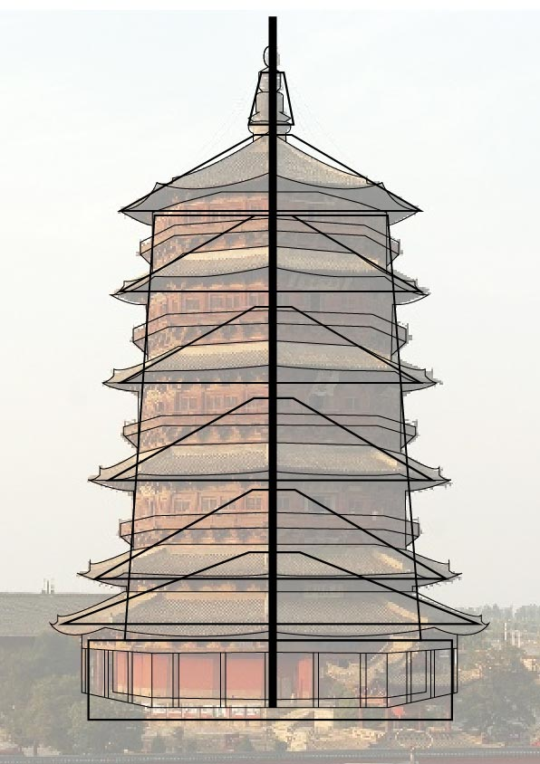

This project is an examination of architecture as a means of guiding a religious and spiritual experience, and a reimagining of these spaces in a modern landscape.
With case studies on the Dule Temple Guanyin Pavilion(独乐寺) and Fogong Temple Sakyamuni Pagoda (佛宫寺释迦塔), the design concept forgoes detail and utilizes the fundamental elements of the pagoda: height, structure, light, centrality, and circular movement. It focuses on the corporeal experience of navigating the structure.
As the passage of time threatens more historical sites, this project is a conservation of traditional architecture - and the experiences of this architecture - through intentional design.
For "Digital Conservation of Buddhist Deities". 3D Modeling and Printed Material. 2019.
Final Posters
Modeling + Design
The pagoda's structure rises vertically - the center of each floor featuring an image of a deity of several deities. In the case of the Sakyamuni Pagoda, and many others, the visitors circumnavigate the structure, confronting each image as they ascend the structure - in a physical and metaphysical experience.
Sakyamuni Pagoda. Source image from Wikimedia Commons
This speculative design uses the core elements of the pagoda to create a minimalist design, drawing the attention to the core stucture of the tower, free of ornate details. As seen in these wireframes - each floor is unified by its "hollow" center, which is in fact occupied by the deities.

Wireframe
The design also employs light as a means of unifying the tower. The light from the source floor travels through each floor up to the topmost ceiling. There at the top, the light moves to a beacon, referencing the pagoda as not only a traversable structure but as a symbol of spirituality in a landscape.

Early prototype designs

Final Wireframe
Final Render
With a focus on movement and experience - in further interations of this project I would hope to export the model into a 3D engine capable of interactivity - allowing for users to experience the space themselves.